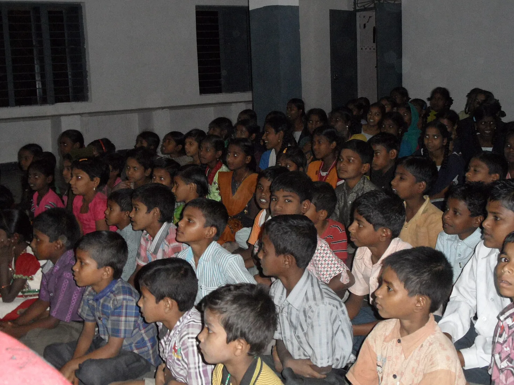
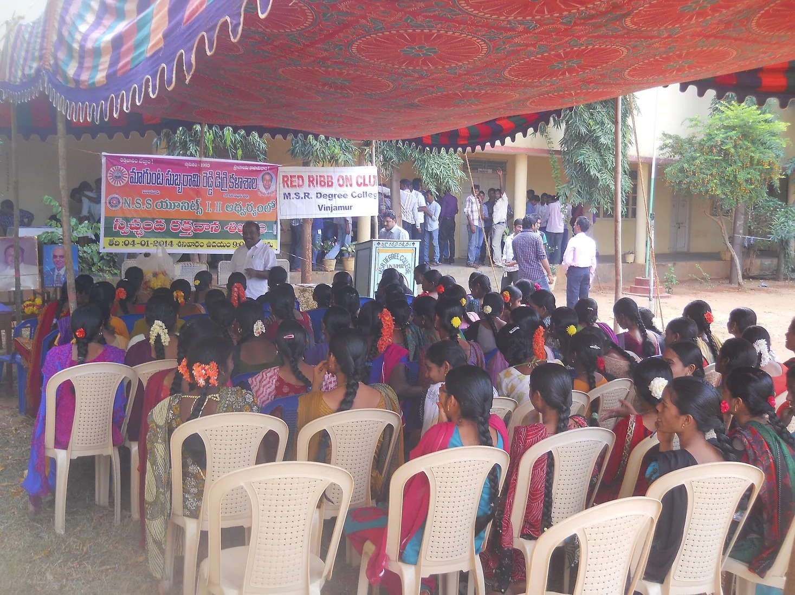
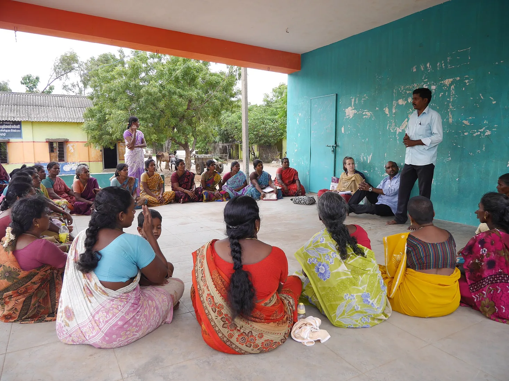
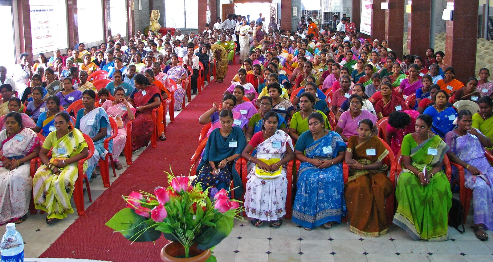

Education
Learning centers, school support, child sponsorship, dropout prevention, and infrastructure help.
CBN Trust works across education, healthcare, and community development so families are supported where the gaps are sharpest.
Learning centers, school support, child sponsorship, dropout prevention, and infrastructure help.
Mobile clinics, health camps, blood donation drives, eye care, and maternal health support.
SHGs, women's livelihoods, rural infrastructure, water access, and local ownership.
Education programs focus on the everyday blockers that push children out of school: distance, supplies, infrastructure, mentoring, and family financial pressure.


Rural and tribal families often travel far for basic screening. CBN Trust health programs can close this gap through camps, mobile outreach, and volunteer-supported drives.
Community development is more than aid. It means SHGs, women's livelihoods, rural infrastructure, and support systems that let families stand on their own feet.

CBN Trust programs are organized around Andhra Pradesh communities, with district-level coordination shared through the trust office.
